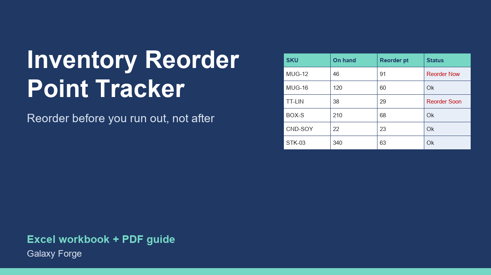

Know what to reorder, when and how much: reorder points with safety stock, days of stock left, and a suggested order list for every SKU.
Small product businesses usually reorder when a shelf looks empty or a listing sells out. By then the lead time has already started working against them: a supplier who needs three weeks means three weeks of lost sales, or rushed shipping that eats the margin.
A reorder point fixes that. It is the stock level at which you must order so that the new stock arrives before you run out: average daily sales x supplier lead time, plus a safety buffer for slower deliveries or a busy week. This tracker calculates it for every SKU, compares it with what you have on hand and already on order, and tells you which items to reorder now, which soon, and how many to order.
It also shows days of stock left and the value of your inventory, so you can see where cash is tied up.
1) Settings: how many days ahead 'reorder soon' should look (7 is a good start) and how many days of sales each order should cover (30, for example). 2) Items: one row per SKU with stock on hand, average daily sales (units sold in the last 30 days / 30), supplier lead time in days, safety stock in days, minimum order quantity, unit cost and any units already ordered. 3) Sort or filter by Status: REORDER NOW first. 4) Use Suggested order qty for your purchase order. 5) Update on-hand and the sales rate weekly.
Price: $15, one-time. Download: inventory_reorder_point_tracker.xlsx (Settings, Items, Summary) and this guide. Works in Excel 2016 or later, Excel for Mac and Excel on the web; opens in Google Sheets and LibreOffice.
New product, listed 2026-10-23: no sales or reviews yet. Example figures in the workbook are illustrative.
This workbook is a planning aid based on the sales rates and lead times you enter; it does not connect to your store or supplier, and stock-outs can still happen when demand or lead times change. Not accounting advice.